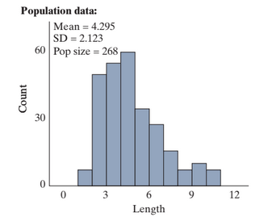
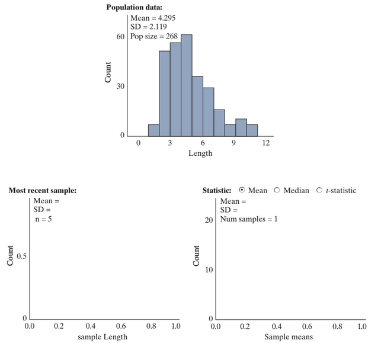
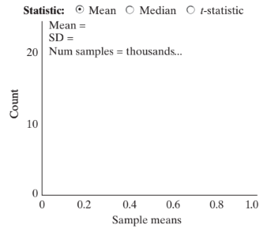

3-2 : Inference for a single quantitative variable
MAT 2100: Introduction to Statistics
Grace College
Last updated September 24, 2024
The Jesus Creed
Hear, O Israel: The Lord our God, the Lord is one.
Love the Lord your God with all your heart and with all
your soul and with all your mind and with all your strength.
The second is this: Love your neighbor as yourself.
Sampling words (cont.)
Let’s reconsider the population of words in the Gettysburg Address you first looked at in a previous exploration. Suppose instead of looking at the proportion of short words (3 or fewer letters) we look at the number of letters per word.
Exercise 1
Is number of letters per word a quantitative or categorical variable? Why?
Exercise 2
Suggest a statistic (a single number) you could calculate from your sample that summarizes the number of letters per word variable.
Exercise 3
What parameter are you hoping to estimate with your statistic? (Hint: Be clear how this relates to the population.)
Exercise 4
How could we explore whether the sampling methods used previously are unbiased in estimating the parameter you identified in #3? What does it mean to be unbiased in this context?
Figure 1:

Definition 2:
Definition ():
A distribution of data is skewed if it is not symmetric and, instead, the bulk of values tend to fall on one side of the distribution with a "longer tail" on the other. Right-skewed distributions have their tail on the right, and left-skewed distributions have their tail on the left.
With skewed data, we might prefer to measure the “center” of the distribution with the median rather than the mean.
Definition 3:
Definition ():
The median is the middle data value when the data are sorted in order from smallest to largest.
Exercise 5
The mean is found to be 4.295 letters, do you think the median is larger or smaller than 4.295? Briefly explain your reasoning.
Exercise 6
Summarize the behavior of this population. Recall that when we have a quantitative variable, we should talk about shape, center (using the mean and/or the median), variability (using the standard deviation), and outliers, as well as making sure that we are making comments relevant to the context of the study.
Remark 4:
Key Idea .
To distinguish a quantitative variable from a categorical variable, we will use different symbols to refer to the statistics and parameters. In particular,
Table 5:
| Statistics | Parameters |
|---|---|
| \(\bar{x} =\) sample mean | \(\mu =\) population mean |
| \(s = \) sample standard deviation | \(\sigma = \) population standard deviation |
Note that we are focusing on the mean and the standard deviation.
Exercise 7
Identify the values of \(\mu\) and \(\sigma\) for the length of words in the Gettysburg Address.
To evaluate our sampling method for a quantitative variable, we want to see whether the means from different samples center around the population mean.
Exercise 8
What term do we use to describe a sampling method where the distribution of the statistic centers around the population mean?
To evaluate our sampling method for a quantitative variable, we want to see whether the means from different samples center around the population mean.
Exercise 9
What term do we use to describe a sampling method where the distribution of the statistic centers around the population mean?
Exercise 10
Open the Sampling Words applet. Make sure that the Variable is set to "Length." Check the Show Sampling Options box, change the Sample size to 5, and press Draw Samples.
Notice that the graph on the left in the applet and in [REF=TODO] is the population, the graph in the middle is your sample, and the mean of this sample is placed in the graph on the right. Fill in your results for the middle and right most graphs in [REF=TODO] . Also indicate the value of the sample mean that you obtained.
Figure 6:

Exercise 11
If we were to repeat the process in #9 thousands of times, predict the behavior of the distribution of sample means—the graph all the way to the right in the applet. (Shape? Center? Variability? Compared to the population?) Sketch your prediction, changing the horizontal axis scale if necessary.
Exercise 12
Change the Number of samples from 1 to 9999 (for 10,000 samples) and press Draw Samples.
Exercise 12a:
Create a sketch of the distribution in the box below — including carefully labeling the horizontal axis and indicating what each dot on the graph represents. (Hint: How many dots do you have? What would you/the applet do to add one more dot to the graph?)

Exercise 12b:
Describe the shape of the distribution of sample means. How does it compare to the shape of the population?
Exercise 12c:
What is the mean of the sampling distribution of sample means? How does it compare to the mean of the population?
Exercise 12d:
What is the standard deviation of the sampling distribution of sample means? How does it compare to the standard deviation of the population?
Exercise 13
Does simple random sampling for quantitative data appear to be an unbiased sampling method? How are you deciding?
Exercise 14
Suppose we wanted less sample-to-sample variation in the sample means. What would you change about the sampling process?
Remark 7:
Key Idea .
When taking random samples from a large population (more than 20 times the size of the sample), the distribution of sample means will
- Center around the population mean (\(\mu\))
- Have a standard deviation smaller than the population, \(SD(\bar{X})=\dfrac{\text{population standard deviation}}{\sqrt{\text{sample size}}}=\dfrac{\sigma}{\sqrt{n}}\)
- Be approximately normal when the sample size is large (by the Central Limit Theorem or if the population distribution is normally distributed)
Like with proportions, we see that the sample mean (\(\bar{x}\)) is unbiased for estimating the population mean, but now we have a different formula for predicting the standard deviation of the statistic.
Exercise 15
Use your applet output to verify that the standard deviation of sample means is approximately equal to \(\sigma/\sqrt{n}\)
The Central Limit Theorem tells us that we can also assume that the distribution of sample means is approximately normal when the sample size is large. How large is large? We cannot check the number of successes and failures because we are working with a quantitative variable. But in a similar manner, the sampling distribution will look normal as long as the population distribution is not too skewed. As we increase the sample size, the distribution of sample means will look more and more like a normal distribution. Generally, if the sample size is at least 20 we can assume that distribution of sample means is approximately normal. We also have a new case—the distribution of sample means will behave like a normal distribution for any sample size, if the population shape is itself approximately normal.
Exercise 16
Next you will change the sample size from 5 to 10. Predict how this will impact the shape, center, and variability of the distribution of sample means.
Exercise 17
Generate 10,000 random samples of 10 words. Sketch the resulting distribution of sample means, remembering to carefully label the horizontal axis. Were your predictions about how the increased sample size would impact the shape, center, and variability accurate?
Exercise 18
Using what you have seen so far, which is least likely:
- Randomly picking one word from the Gettysburg Address and finding it be 6 letters or more.
- Randomly picking 5 words from the Gettysburg Address and finding the mean of the 5 words to be 6 letters or more in length.
- Randomly picking 10 words from the Gettysburg Address and finding the mean of the 10 words to be 6 letters or more in length.
Explain your reasoning.